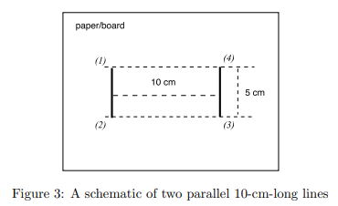
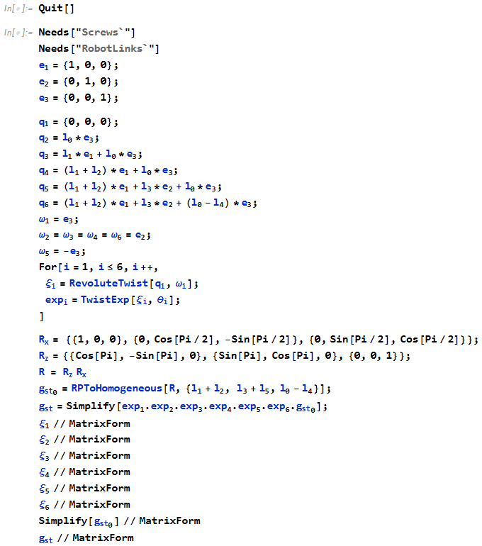
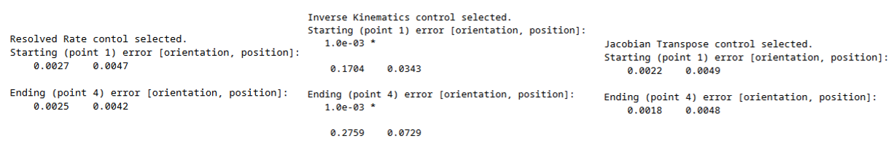
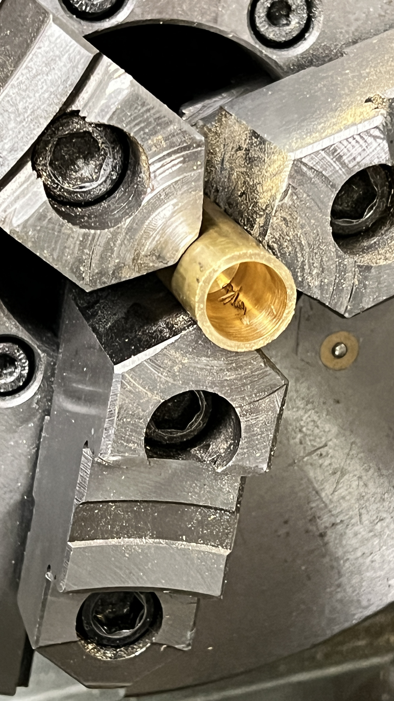
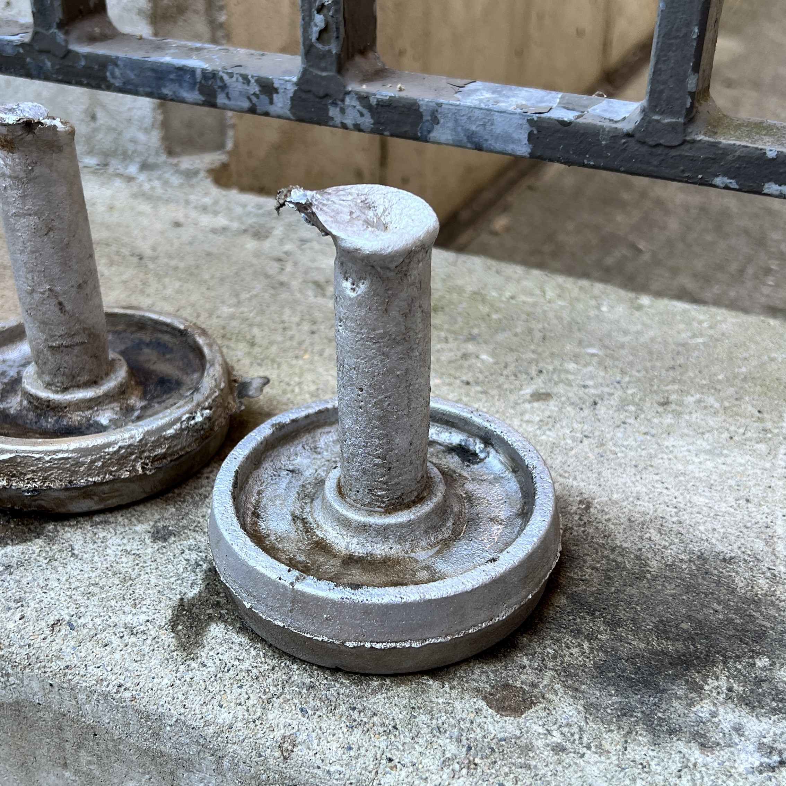
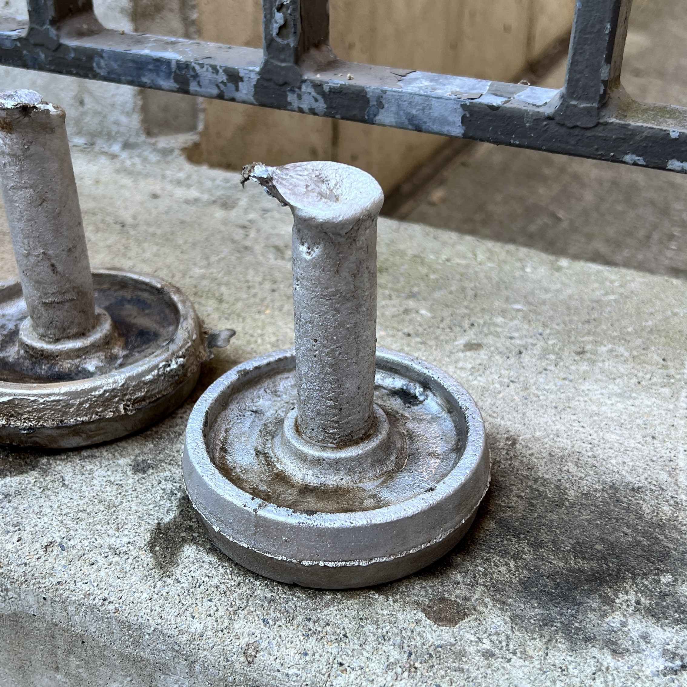
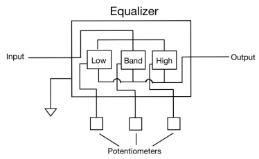
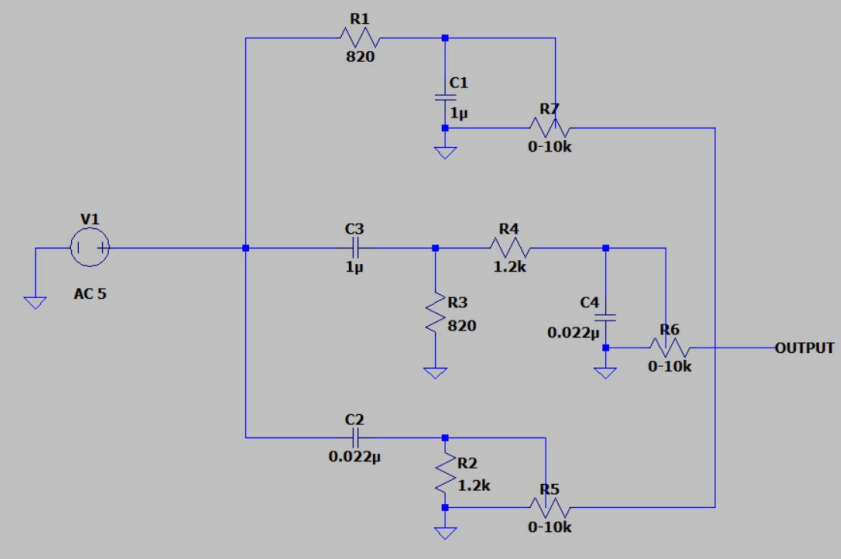
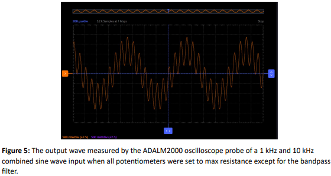

UR5 Robot Arm Control
Johns Hopkins University
Baltimore, MD | Aug. 2024 - Dec. 2024
Baltimore, MD | Aug. 2024 - Dec. 2024

final result
As a cumulative project for my Robot Devices Kinematics Dynamics & Control (RDKDC) course, taught by
Dr. Jin Seob Kim, we were tasked to control a UR5 robot arm
using Mathematica, MATLAB, ROS2, and the mathematical theory we learned throughout the semester. The goal was to manually "teach"
the robot a starting and ending point, then have it draw two parallel lines of 5 cm length at those points.

starting point (1) and ending point (4) - from Dr. Kim's project outline
My partner and I used Mathematica and the product of exponentials formula to compute the forward kinematics of the UR5 for
any given state vector, which was then implemented into a MATLAB function. The Paden-Kahan subproblems were used to solve
for the inverse kinematics, returning a maximum of 6 possible state vectors for any given homogeneous transformation matrix
in the workspace of the UR5.

forward kinematics formula computation
Calculating manipulability using the inverse of the condition number of the Jacobian to avoid singularities and monitoring
the joint angles to safely manuver the robot in our lab environment, three different control methods were implemented:
resolved-rate control, inverse kinematics control, and Jacobian transpose control.

test run to tune the constants (gain, timestep, etc.)
After many hours of tuning the constants, we presented our project to Dr. Kim, reporting the translational and rotational error
of our robot control compared to the simulation in RVIZ.

rotational and translational error in radians and meters respectively
Stirling Engine Fabrication
Johns Hopkins University
Baltimore, MD | Aug. 2024 - Dec. 2024
Baltimore, MD | Aug. 2024 - Dec. 2024

Stirling engine final test
Starting from the first day of our manufacturing engineering class, we were given engineering drawings of a Stirling engine design and its parts.
As we learned how to use the lathe, the mill, the press brake, and other general tools, I machined each individual component to the appropriate
tolerances. Below are some example components during the manufacturing process.


turning an aluminum piston wheel on the lathe



turning brass into piston housing

milling steel base plate
In addition to machining, we sand casted the flywheel with aluminum. The sprue was cut off using a band saw and
I turned it down to size afterwards.
 

sand casting aluminum flywheel
Finally, the whole engine was assembled using machine screws, tubing, teflon tape, rods, a bearing, and a test tube.
After tuning the engine slightly, it was tested using an alcohol burner and was able to run smoothly and continuously
for at least one minute, the required runtime.
Stirling engine final test
Turbomachinery Impeller Optimization
Seoul National University
Seoul, South Korea | Oct. 2022 - Jun. 2023
Seoul, South Korea | Oct. 2022 - Jun. 2023
I was lucky to have the opportunity to study abroad in South Korea for my Fall 2022 and Spring 2023 semesters, and even luckier to have met Professor Seung Jin Song that Fall semester.
Fluid mechanics had not struck me as an interesting discipline in mechanical engineering, but Professor Song's enthusiasm for the field, especially in his research in turbomachinery, was contagious.
Inspired, I went up to him one day after class and asked if he had any openings in his lab. Guess where I found myself the following week?

my workstation at the laboratory
Professor Song's lab, the Seoul National University Turbomachinery Lab, had partnered with South Korean rocket startup Perigee, and I was tasked with evaluating/optimizing the impeller/inducer design for their liquid oxygen (LO) pump.
First, I was introduced to TurboGrid on the ANSYS Workbench software, where I set meshing parameters and generated a mesh.

TurboGrid meshing software
I checked the sharp corners/edges of each part to make sure the mesh was fine enough to get a good analysis of the flow there and sent the mesh to ANSYS CFX.

ANSYS Workbench workflow diagram
Once I set the CFX settings and ran it, I analyzed the results using CFD-Post and checked the pressure differences in front of and behind the blades.

CFD Post analysis
Presenting the results to my mentors, I was later given a new design that I was tasked with meshing using ICEM CFD.
I was also fortunate enough to have the opportunity to attend the 2nd Launch Technology Seminar [발사체 기술 세미나 2차] in Daejun, South Korea, where I learned a lot more about what goes into launching a rocket into space and the current technologies being developed for that goal.

the seminar was held at the Korea Aerospace Research Institute in Daejun

many different groups from all over Korea came to share their ideas on launching rockets
Vibration-sensing Spider Robot
Johns Hopkins University
Baltimore, MD | Jun. 2023 - Aug. 2023
Baltimore, MD | Jun. 2023 - Aug. 2023
The summer of 2023 I worked in Dr. Chen Li's Terradynamics Lab under PhD student Eugene Lin.
One of the projects in a lab focusing in bio-inspired robotics to study animal behavior, the vibration-sensing spider robot aimed to imitate how spiders felt vibrations from their web through organic sensors at the joints in their legs.
A strange behavior was observed in some spiders where they changed the posture of their legs, supposedly influencing how they sense the vibrations.
In order to study this further, a robophysical model was made.

the initial spider robot design assembly
My job for this project was to design legs that act somewhere between a mechanical template and a mechanical anchor for those of an orbweaver spider.
This means that it should mimic the behavior of the organism to an extent, but should be simplified and constrained to isolate features for analysis.
This allowed me to narrow down my goals to designing a leg that had two degrees of freedom and were directionally-dependent in stiffness.

the two degrees of freedom required
Given an initial design made by a previous intern, I corrected some dimensions and tolerances for easy assembly.

the initial design did not have two degrees of freedom of adequate range
I 3D printed this design and quickly brainstormed some ideas that would allow for directional stiffness.
Throughout the next few iterations, I added features that would allow implementation of springs, heatshrink, and rubber bands, in addition to a string that would pull/extend the leg.
Each week I would give a presentation to my lab colleagues and to Dr. Li to collect feedback and ideas.

the SOLIDWORKS design for my third iteration
For new parts I would submit a purchase request and for each iteration I would have a SOLIDWORKS part to show my mentor.

the SOLIDWORKS drawing for my fourth iteration along with the printed and assembled part
Three-band Equalizer
Johns Hopkins University
Baltimore, MD | Dec. 2023
Baltimore, MD | Dec. 2023
final demo
I decided to build a three-band equalizer as my final cumulative project for my Mastering Electronics course. I first used the
desired cutoff frequencies, around 200 Hz and 6000 Hz, in order to calculate the necessary RC constants. Then, I found appropriate
resistors and capacitors that would make up the filters. For the 200 Hz cutoff this was 820 Ω and 1 μF, and for the 6000 Hz cutoff
this was 1.2 Ω and 0.022 μF. In addition, I added three potentiometers to control the influence of each filter. Then, I drew a
block diagram and made a circuit diagram in LTSpice.


block diagram and circuit schematic
After ensuring each filter worked properly using Scopy's wave generator and oscilloscope to input sine waves of different frequencies
and to examine the output, I implemented an operational amplifier and speaker to test the equalizer on computer audio. The resulting
demo can be found in the YouTube video at the top of this page.

scopy output plot - from final report
Vacuum Cleaner Reverse Engineering
Seoul National University
Seoul, South Korea | Dec. 2022
Seoul, South Korea | Dec. 2022
Cable Robot Prototyping
Korea Institute of Medical Microrobotics (KIMIRo)
Gwangju, Jeolla, South Korea | Jun. 2020 - Aug. 2020
Gwangju, Jeolla, South Korea | Jun. 2020 - Aug. 2020
Crosslinked CubeSat Pair Launch
Millennium Engineering and Integration (Axient)
Arlington, VA | Jul. 2021 - Aug. 2021
Arlington, VA | Jul. 2021 - Aug. 2021
Passacaglia (arr. for two cellos)
Handel/Halvorsen
Griswold Hall, Peabody Conservatory | Baltimore MD, USA | May 2024
Performed by Gloria Lee and Ethan Oh
Cello Concerto in A minor
Robert Schumann
Kukje Art Hall | Seoul, South Korea | June 2023
with pianist Yeri Yoo
Cello Concerto in A minor
Robert Schumann
Griswold Hall, Peabody Conservatory | Baltimore MD, USA | February 2022
Cello Concerto in B minor
Antonin Dvorak
Kukje Art Hall | Seoul, South Korea | August 2020
Cello Suite No. 3 in C major, Prelude
J.S. Bach
Kukje Art Hall | Seoul, South Korea | August 2020
Cello Suite No. 3 in C major, Sarabande
J.S. Bach
Kukje Art Hall | Seoul, South Korea | August 2020